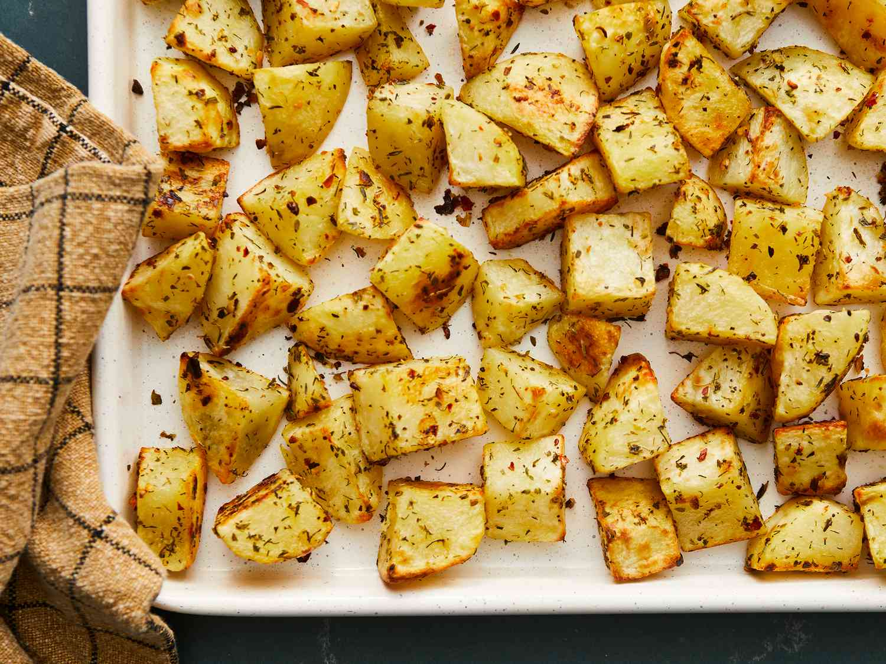

Potato Meal
Ingredients
- 2 potatoes
- 1 chicken breast fillet
- 100g diced bacon
- Shredded cheese
- Seasoning:
- salt
- pepper
- paprika
- rosemary
- cumin
Preparation
- Slice potatoes into small cubes
- Let sit in cold water for 2 minutes
- Drain water and season with salt, pepper and paprika
- Spary with cooking oil and cook in air fryer for 18 minutes at 190 degrees
- Butterfly cut the chicken breast to get 2 thinner fillets
- Generously season both sides of each fillet with all seasonings
- Heat oil in frying pan
- Cook chicken breasts on medium heat flipping regularly to prevent burning
- Once cooked, allow to cool then using 2 forks pull chicken into thin strips
- Fry diced bacon until crispy
- Once pototoes are finished, place on a tray with baking paper, then top with chicken, bacon and mix together
- Top with shredded cheese and place in oven at 200 degrees until cheese melts
